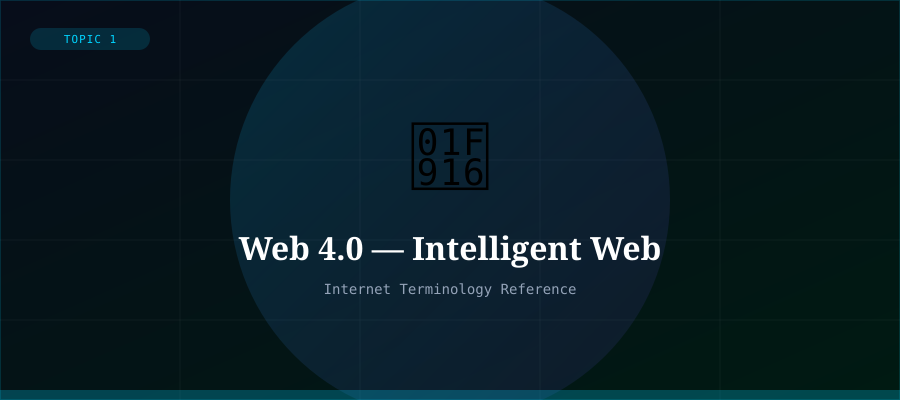

What is Web 4.0?
Web 4.0 is an emerging concept for the next generation of the Web, often described as the 'symbiotic web' or 'intelligent web'. It envisions a deeply integrated ecosystem where artificial intelligence, the Internet of Things (IoT), augmented reality, and the Web merge seamlessly into an intelligent layer that interacts with both the digital and physical world.
Unlike its predecessors, Web 4.0 is not yet fully defined or realised — it represents the direction the Web is evolving as AI becomes embedded in everyday devices and environments.
Key Characteristics
- AI-powered — intelligent agents anticipate and act on user needs
- Ambient computing — Web embedded in physical environments via IoT
- Augmented & Virtual Reality — immersive, spatial web experiences
- Voice and Natural Language interfaces replace traditional input
- Hyper-personalisation driven by AI and vast data analysis
- Ultra-connectivity — billions of devices constantly communicating
- Emotion and context awareness in digital systems
Relationship to Previous Web Generations
Web 1.0 was read-only. Web 2.0 was read-write. Web 3.0 is read-write-own (decentralisation). Web 4.0 is read-write-own-interact — a fully symbiotic relationship between humans, machines, and intelligent digital systems.
Technologies driving Web 4.0 include large language models (like the one generating this page), computer vision, edge computing, 5G/6G connectivity, brain-computer interfaces, and advanced robotics.
Timeline and Current State
Web 4.0 is considered to be in its very early stages, with many of its defining technologies still maturing. The rapid advancement of generative AI (2022 onwards) is seen as a major catalyst, with AI assistants, autonomous agents, and intelligent interfaces beginning to reshape how humans interact with information and computers.